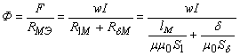
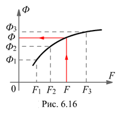
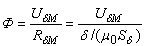
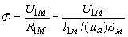
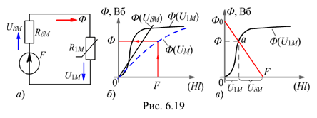

6.3.2.2.Обратная задача
Заданы геометрические размеры магнитопровода: lM, d, S1 » Sd и кривые намагничивания ферромагнетиков отдельных участков цепи (см. рис. 6.15, а и б), а также МДС F обмотки. Нужно определить магнитный поток Ф в зазоре.
Запишем закон полного тока:
H1lM + Hdd = F = RМЭФ = wI.
Откуда искомый магнитный поток
, |
(6.14) |
|---|
Полученное нелинейное относительно магнитного потока Ф уравнение обычно решают на ЭВМ, выражая зависимость m(Ф) в аналитической или табличной форме. Приближенное решение можно получит посредством графо-аналитических методов.
Метод последовательного приближения. В первом приближении примем магнитное сопротивление цепи RМЭ, равное магнитному сопротивлению воздушного зазора, т. е.
 RМЭ » RdМ = d / (m0Sd) = 8Ч105d / Sd.
При этом условии возбуждаемый известной МДС F магнитный поток Ф0 в магнитопроводе заведомо больше действительного, т. е.
Ф0 = F / RdМ > Ф.
Примем Ф1 = 0,7Ф0 и определим по методике прямой задачи величину F1, затем примем Ф2 = 0,8Ф0 и определим F2. Если F2 < F, то примем Ф3 > Ф2, например, Ф3 » 0,9Ф0 и определим F3, и т. д. (до 5…6 значений Ф). Строим вебер-амперную характеристику Ф(F) цепи (рис. 6.16) и, проведя вертикальную линию с точки F (заданной МДС) до пересечения с кривой Ф = f(F), а затем горизонтальную линию с этой точки до оси ординат, находим на оси ординат искомый магнитный поток Ф.
Графический метод. Вычерчиваем схему замещения исследуемой цепи (см. рис. 6.17, а) с выделением участка с линейным магнитным сопротивлением RdM и участка с нелинейным сопротивлением R1M (рис. 6.19, а).
МДС схемы замещения
F = ФRdM + ФR1M = UdM + U1M,
откуда  - линейная зависимость Ф = f(UdM);
 - нелинейная зависимость Ф = f(U1M).
Строим на одном рисунке (в выбранном масштабе) три графика (рис . 6.19, б): Ф(UdM) для воздушного зазора - прямую линию, угол наклона к оси абсцисс которой пропорционален сопротивлению RdM; Ф(U1M) для магнитной цепи без воздушного зазора - кривую, подобную графику B(H) материала, т. к. магнитный поток Ф = BSM пропорционален магнитной индукции В, а магнитное напряжение UM = HlM – напряжённости H, и график Ф = f(UM), откладывая от оси ординат по горизонталям отрезки, равные суммарной длине отрезков кривой Ф(U1M) и прямой Ф(UdM).
Затем из точки F = UM восстанавливаем перпендикуляр до пересечения с пунктирной кривой Ф(UM) и на оси ординат находим искомый магнитный поток Ф.
На практике поступают проще. Анализ выражения магнитного потока Ф = ( F - U1M )/ RdM показывает, что U1M = F при Ф = 0 и U1M = 0 при Ф = F / RdM = Ф0 (рис. 6.19, в). Прямая, соединяющая две точки Ф0 и F, пересекает кривую Ф(U1M) в точке а, горизонталь через которую дает на оси ординат искомый магнитный поток Ф, а вертикаль позволяет определить на оси абсцисс магнитные напряжения U1M и UdM.